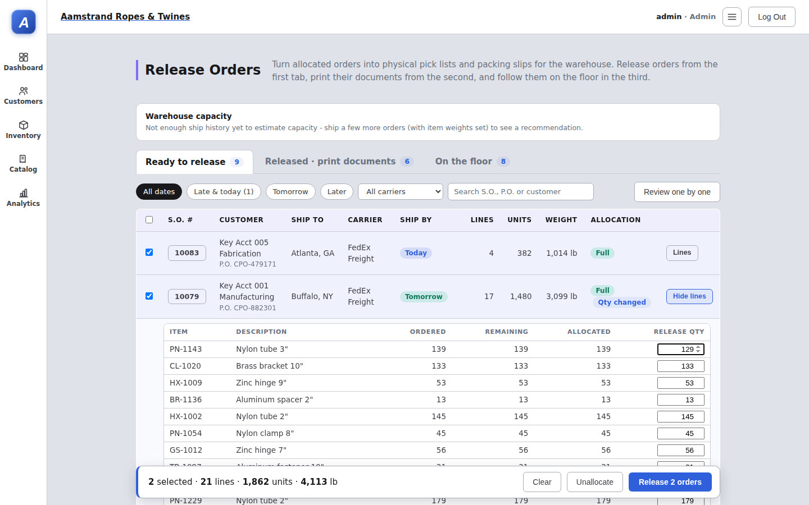
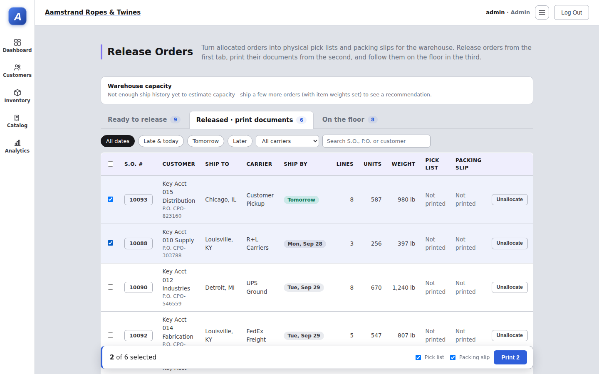
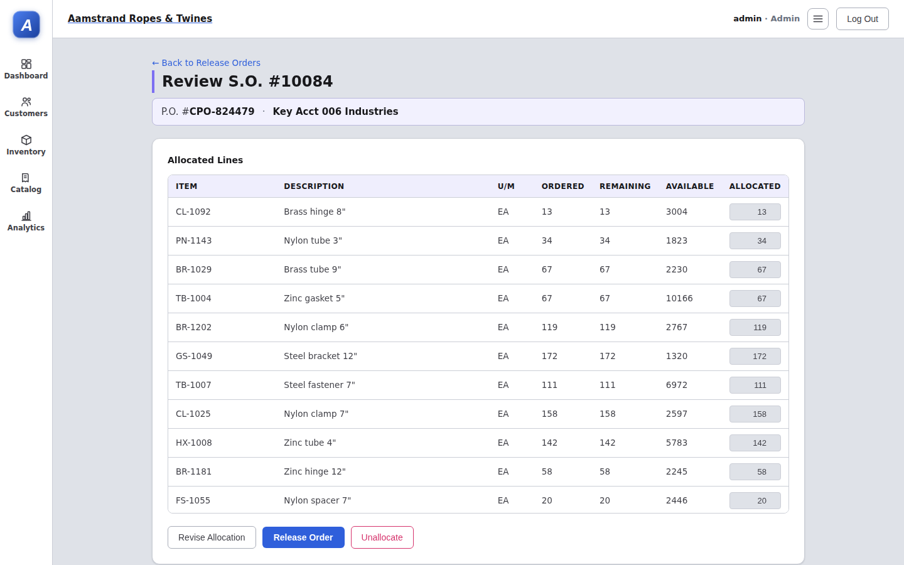
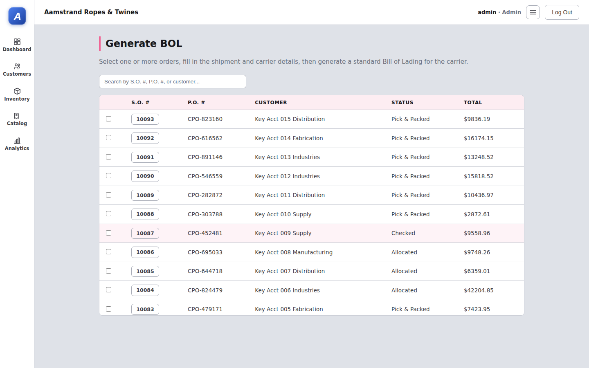
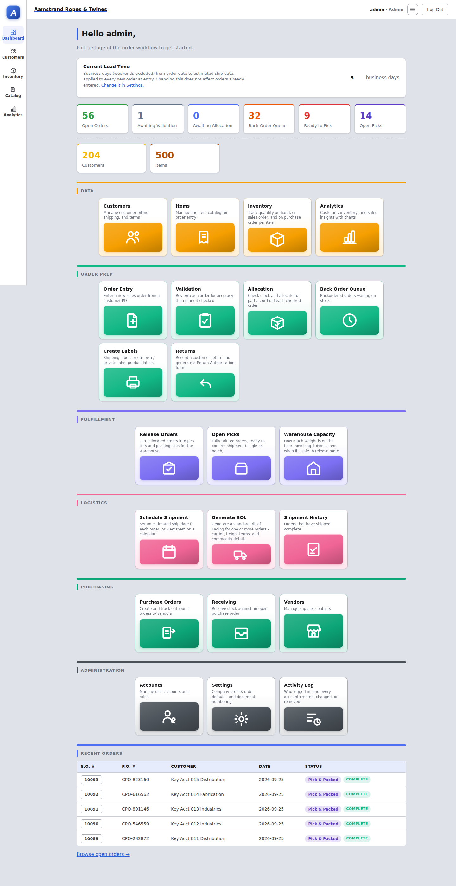
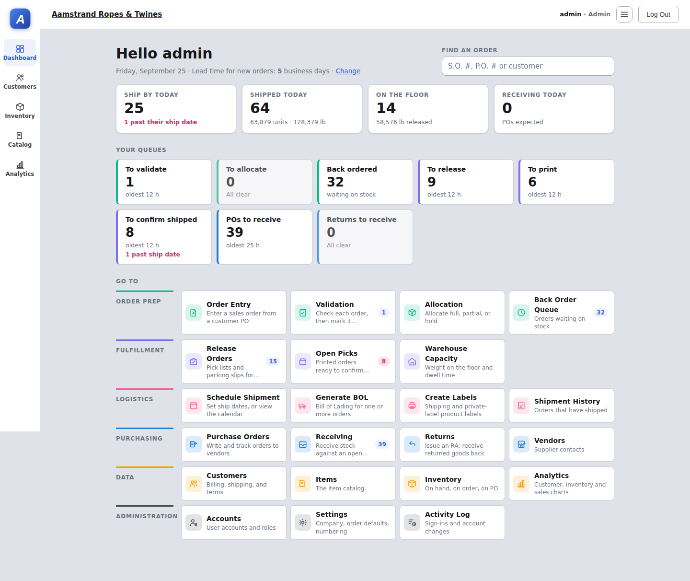
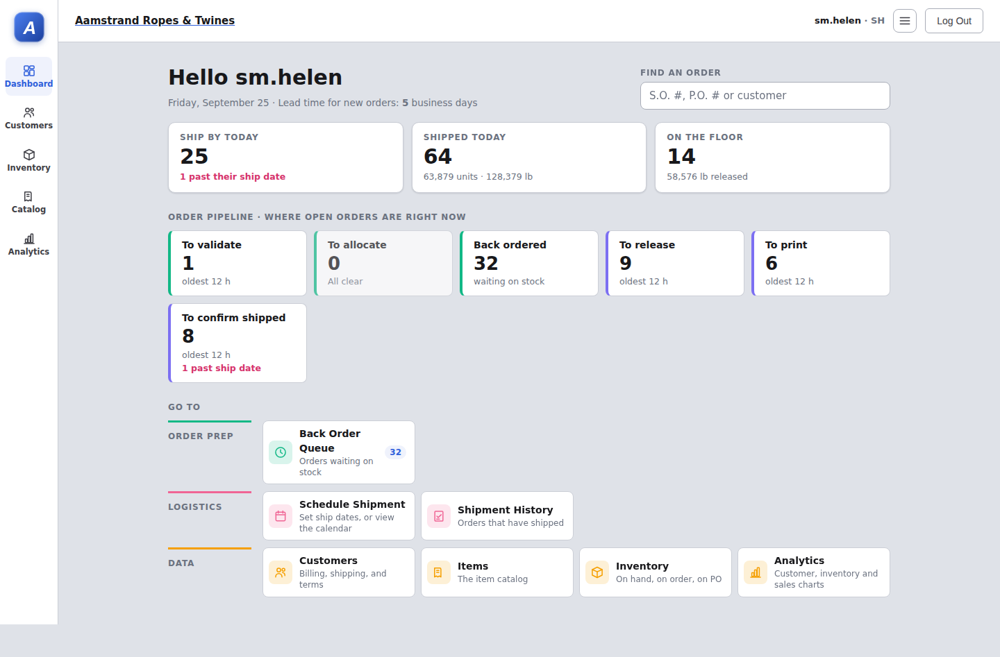
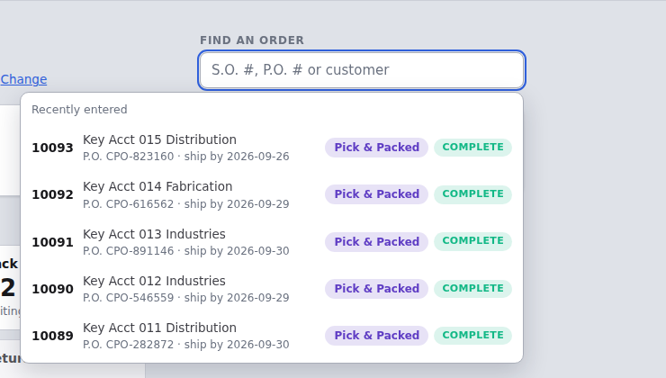

Round 3: Release Orders and the Dashboard
Everything that changed since the last merge to main (4ed52f7, PR #1). The pick-and-pack stage is renamed and rebuilt as Release Orders, long lists no longer push their Save and Generate buttons off screen, and the Dashboard now opens on each person's own work.
Summary of changes
- Rename"Pick & Pack" is now "Release Orders" on the menu, page titles, buttons, back links, permission names and the Open Picks column. The per-order button is Release Order.
- NewRelease Orders rebuilt (design Option A). Three tabs, one per step. Ship-by date, carrier, size, weight and allocation on every row. Filters. Several orders release at once from a bar that stays on screen, and a line's quantity can be trimmed without leaving the list.
- NewBulk release API (
POST /api/sales-orders/release). Each order goes in its own transaction, so one stale order doesn't block the rest. - NewScroll windows on 15 screens. Long lists scroll inside their own box with a pinned header, so Save, Generate BOL, Release Order, Mark Shipped, Receive and similar buttons stay in reach.
- NewDashboard redesign. A "today" strip, each person's own queues with counts, age and lateness, an order lookup, and a compact launcher in workflow order. Roles that don't work order queues see the order pipeline read-only.
- FixThe capacity banner no longer shows nonsense like "22469342%". It needs 5 shipping days and 20 shipments of history first, and is capped at ">999%".
- FixA missing
}in the stylesheet had switched off the Import page's results styles since round 2. - FixPage titles stay on one line, and the header row wraps cleanly on narrow screens.
- DocsRelease Orders design options (
docs/design/release-orders/), this report, and new items on the shared to-do list.
Rename: Pick & Pack → Release Orders
The stage turns allocated orders into physical pick lists and packing slips for the warehouse, and the name now says so.
- Dashboard tile "Release Orders", with the description "Pick lists and packing slips for the floor".
- Release Orders page: the title and intro are new.
- Per-order page: the back links read "Back to Release Orders" and the primary button reads Release Order (it was "Release Pick").
- Allocation: the outcome reads "Allocate what's available · send to Release Orders".
- Order Detail: the next-stage buttons read "To Release Orders".
- Open Picks: the "Pick & Pack" column is now "Release".
- Permissions: "Release Orders (print pick lists)" (page key
pick-pack) and "Release Orders (release to warehouse)" (pick-release). The round-2 report's "Release Picks" permission is the second of these.
Unchanged on purpose: the web address stays /#/pick-pack, so bookmarks keep working. The status after release is still "Pick & Packed", and renaming it to "Released" is on the to-do list.
Release Orders, rebuilt


What each tab is for
- Ready to release (analysts): allocated orders with ship-by, carrier, lines, units, weight, and a Full/Partial allocation tag. Tick orders and press Release N orders. Lines opens an order in place to lower a line's release quantity, or you can open the full review. "Review one by one" still steps through orders the old way.
- Released · print documents (order entry): released orders waiting for their pick list and packing slip. Nothing is ticked until you choose. Print from the bar at the bottom.
- On the floor (everyone): printed orders waiting to ship, with how long each has been out. This tab is read-only; confirm shipments on Open Picks.
Rules the release follows
- A line can release at most what's allocated to it. To send more, open the full review and revise the allocation.
- A released line's allocation is used up by the release. A line left at 0 keeps its allocation, the same as the single-order page (open bug M-12b).
- Only accounts with Release Orders (release to warehouse) can release or unallocate. The server enforces this, and Order Entry gets a 403.
- Each order is its own transaction. If someone changed an order in the meantime, only that order is refused, and the message names it and why.
- Filters work on every tab: late & today, tomorrow, later, carrier, and a search on S.O., P.O. or customer.

The design options that led here (release list, waves, board) are in docs/design/release-orders/. Waves (Option B) are the next step, once items have bin locations and truck lines have pickup times.
Long lists scroll in a window
On screens where a button sits under a list that can grow long, the list now scrolls inside its own box, at most 60% of the window tall, with its header pinned. Short lists look exactly as before. Printing is unaffected.


| Screen | List now in a window | Button kept in reach |
|---|---|---|
| Order Entry, Order Detail, Validation decision, Open Picks detail | Line items (shared table) | Save / Submit Order, next-stage button, Mark Checked, Mark Shipped |
| Generate BOL | Open order list; shipment details | Generate BOL |
| Release Order (per-order review) | Allocated lines | Release Order, Revise Allocation, Unallocate |
| Allocation decision | Line items | Confirm & Apply |
| Order Detail | Shipment history | Cancel Order, Undo Last Shipment |
| Open Picks | Staged orders | Confirm Shipment (Selected) |
| Purchase Order form / detail | PO lines | Save Purchase Order, Receive |
| Return form / detail | Return lines; restock table | Save Return Authorization, Receive Return |
| Customer Pricing | Pricing grid | Save Changes |
| New Customer / Customers | Customer catalog (part numbers) | Save Customer, Save Changes |
| Accounts | Permission grid (37 rows) | Add Account, Save Permissions |
| Release Orders (new page) | Lines of an expanded order | The release bar stays pinned at the bottom of the screen instead |
Skipped because the button is already above the list, or saves as you type: Validation and Allocation lists, Schedule Shipments, Receiving, Product Labels, Vendors, Back Order Queue, Item Profile, Routing Guide and Inventory Adjust. Import already had its own scroll box, which now works because of the stylesheet fix.
Dashboard: work first, menu second


1 · Your queues first
- These are the workflow queues the person can work: to validate, to allocate, back ordered, to release, to print, to confirm shipped, POs to receive, and returns to receive.
- Each card shows the count, the age of the oldest item, and how many are past their ship date (or, for POs, their expected date).
- The same counts appear as badges on the tiles. A badge turns red when something in it is late.
- Roles that don't work an order queue get Order pipeline: the same cards, read-only, for answering "where's my order?".
2 · Compact launcher in workflow order
- Order Prep → Fulfillment → Logistics → Purchasing → Data → Administration.
- Small tiles with the icon inline and a short description.
- Purchasing has its own blue; it used to be almost the same green as Order Prep.
- Create Labels moved to Logistics, and Returns moved to Purchasing (stock coming back in).
- Tiles still hide pages the account can't open.
3 · A "today" strip
- Ship by today: open orders due today, and how many are already past their date.
- Shipped today: orders, units and pounds confirmed since midnight.
- On the floor: released orders and their weight (links to Warehouse Capacity).
- Receiving today: POs expected today and overdue (for roles that see POs).
Find an order
- The box in the header searches by S.O. #, P.O. # or customer name, as you type.
- With nothing typed, it lists the last five orders entered, which replaces the old Recent Orders table.
- Enter opens the top match.
- Lead time is now a one-line note under the greeting. The Customers and Items counts are gone.
| Role (sim account) | Your queues | Order pipeline (read-only) |
|---|---|---|
| Director (dir.sam), Admin | All eight | — |
| Analyst (an.derek) | To validate, To allocate, Back ordered, To release | — |
| Order Entry (oe.tom) | To print | — |
| Logistics (log.marcus) | To confirm shipped | — |
| Purchasing (pur.dan) | POs to receive | Shown |
| Customer Service (cs.linda) | Returns to receive | Shown |
| Sales Manager (sm.helen) | — | Shown |


Load: the Dashboard now makes one request for open orders plus anything shipped today, and loads only open POs and open returns. Both list endpoints gained an ?open=1 filter, so the page doesn't download PO or RA history. It no longer loads the customer list.
Fixes
| Problem | Cause | Fix |
|---|---|---|
| The capacity banner read "Warehouse at 22469342% of estimated capacity" | Capacity is estimated from shipping history. With one or two shipping days, the estimate is close to zero. | A percentage is shown only after 5 shipping days and 20 shipments in the lookback, and is capped at ">999%". Until then the banner says there isn't enough history yet. |
| Import results table and status pills were unstyled | A rule in index.css was missing its closing }, so everything after it was ignored | Added the brace. The Import page now looks as it was designed to. |
| "Release Orders" wrapped onto two lines | The header row let the title shrink | Titles stay on one line; the intro text wraps under them on narrow screens. |
| The Dashboard said "Ready to Pick" for orders that haven't been released | Old wording | It's now "To release", in the new queue cards. |
Testing
| Check | What it covers | Result |
|---|---|---|
| TypeScript and lint | tsc -b (frontend) and tsc --noEmit (server); oxlint | Clean (2 pre-existing warnings in authContext.tsx) |
| Server behavior checks (rounds 1–2) | Permissions per role, item links, stock ledger, cancel and return restock, optimistic locking | 16 / 16 |
| Browser checks (rounds 1–2) | Shipping, receiving, stale-page guard, cancel, Order Entry can't release, return restock, stock ledger, every page for every role without errors | 73 / 73 |
| Bulk release API | Full release; trimmed release (62 of 63 sent, and the untouched line kept its 143 allocated); stale version refused; more than allocated refused; the rest of the batch still released; Order Entry gets 403; audit entries written | 7 / 7 |
| Release Orders in the browser | Tabs and counts; editing a quantity ticks the order; the bar totals and stays on screen when scrolled; release message; orders move tabs; trimmed units carried through; print tab starts unticked; search and date filters; unallocate; Order Entry lands on print with no release controls | 18 / 19 (the one miss is the phone-width top bar, which was already there) |
| Dashboard by role | Queues shown for 10 accounts across all 7 roles; lookup search and Enter-to-open; no overflow inside the page at 400 px | Checked with screenshots |
The browser check for Order Entry was updated to the tabbed page (sim/ui-check.mjs). The day simulation wasn't re-run: the order workflow and stock rules are unchanged, and the bulk release goes through the same state change as the per-order page.
What to try tonight
- Sign in as an analyst. The Dashboard shows To validate / To allocate / Back ordered / To release with ages. Click To release.
- On Ready to release, pick Late & today, tick three orders, open one with Lines and lower a quantity. Watch the bar totals, then press Release 3 orders.
- Sign in as Order Entry. Release Orders opens on the print tab. Tick the three orders and print. They move to On the floor.
- Open a large order (20+ lines) in Order Detail, Allocation or Generate BOL. The list scrolls in its box and the button is right underneath.
- Sign in as Customer Service or a Sales Manager. Use Find an order with part of a customer name, and look at the read-only pipeline.
Still open or worth knowing
- Status name: "Pick & Packed" still appears as the status after release. Renaming it to "Released" is on the to-do list.
- M-12b (open bug): a line released at 0 keeps its allocation. Bulk release follows the same rule as the single-order page.
- On the entry forms, when a list fills its window, a newly added line appears at the bottom of the window without scrolling into view.
- The Release Orders tile badge adds the "to release" and "to print" counts together.
- Phone width: the top bar and some wide tables still make pages scroll sideways (not new).
- Waves (Option B) need bin locations on items and pickup times per truck line first.
Commits and files
| Commit | Change |
|---|---|
| 99ce172 | Rename the Pick & Pack stage to Release Orders |
| 0be62a9 | Keep page titles on one line; don't show a capacity percentage without enough shipping history |
| 766c3dc | Add Release Orders design options (mockups, flows, recommendation) |
| b2dd4d9 | Put long lists in scroll windows so action buttons stay in reach |
| b8fa1c4 | Release Orders: tabs per step, bulk release, inline line quantities |
| 588cc3d | Release Orders: take "now" from when the lists loaded, not during render |
| ffc5704 | Merge the scroll-window work into the branch |
| 955237d | Dashboard: your queues first, a today strip, and a compact launcher |
| 5d7035b | ui-check: Order Entry check follows the tabbed Release Orders page |
| 20dca57 | Dashboard: read-only order pipeline for roles that don't work an order queue |
| (this) | Round 3 change report |
| Area | Files |
|---|---|
| Server | routes/salesOrders.ts (bulk release), routes/vendorPurchaseOrders.ts and routes/returns.ts (?open=1) |
| Rebuilt pages | PickPack.tsx (Release Orders), Dashboard.tsx |
| Scroll windows | LineItemsTable.tsx, CustomerEditor.tsx, GenerateBOL.tsx, PickPackDetail.tsx, AllocationDecision.tsx, OrderDetail.tsx, OpenPicks.tsx, OpenPicksDetail.tsx, PurchaseOrderForm.tsx, PurchaseOrderDetail.tsx, ReturnForm.tsx, ReturnDetail.tsx, CustomerPricing.tsx, Accounts.tsx |
| Rename and fixes | permissions.ts, warehouseCapacity.ts, WarehouseCapacityBanner.tsx, WarehouseCapacity.tsx, index.css |
| Data helpers | orderStore.ts (releaseOrders, listOpenOrdersShippedSince), vendorPoStore.ts, returnStore.ts |
| Tests and docs | sim/ui-check.mjs, docs/design/release-orders/, docs/review/erp-review-3.html and round3/ screenshots |